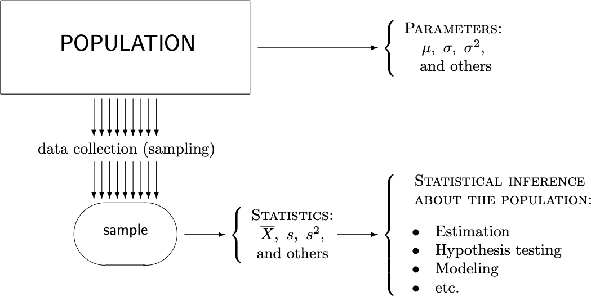
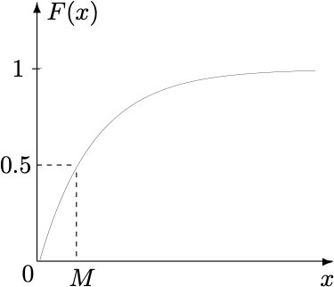
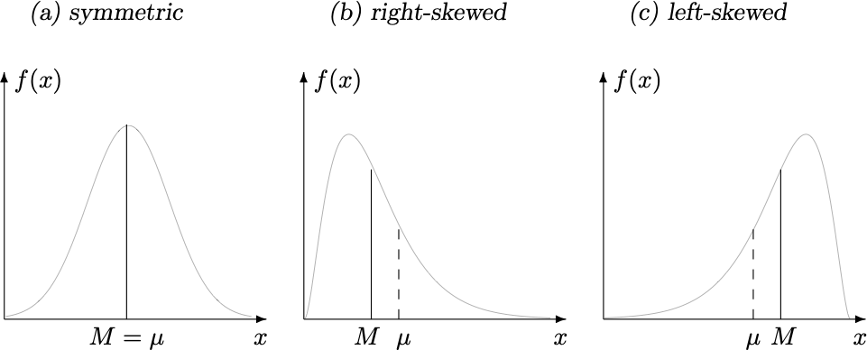
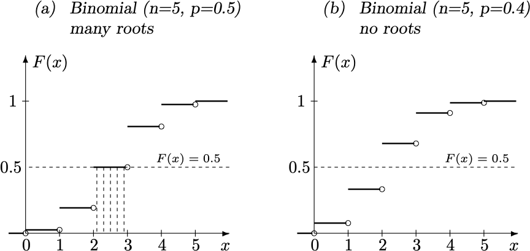
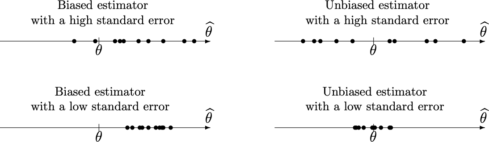
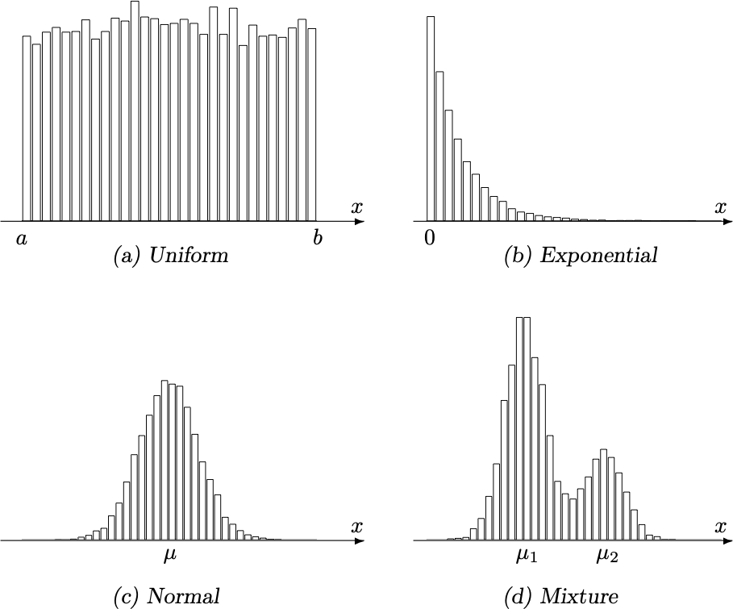
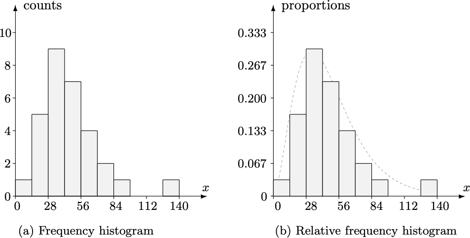
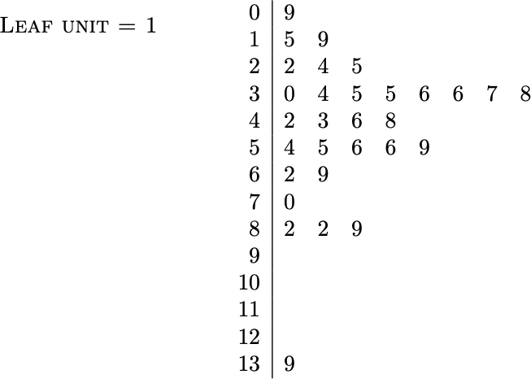
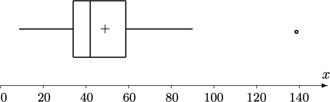
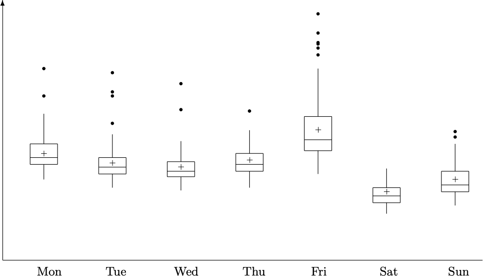

Xiaojing Ye
Department of Mathematics and Statistics
Georgia State University
Probability theory underpins randomness. In real-life, we need data to understand probability distributions.

Let \(p\) be a pmf/pdf. We call \(X_1,\dots,X_n \stackrel{\text{iid}}{\sim} p\) a sample of \(p\).
We can use the values of some specific statistics to describe \(p\).
Let \(F\) be the cumulative distribution function (cdf) of a population (pmf or pdf) \(p\). The median of \(p\) is a number \(M\) such that \[ P(x < M) \le \frac{1}{2} \quad \text{and} \quad P(x > M) \le \frac{1}{2} \]
If \(p\) is a pdf, then \(M\) is a unique value such that \[ F(M) = \int_{-\infty}^{M} p(x) dx = \frac{1}{2}. \]
If \(p\) is a pmf, then \(M\) may not be unique.
Find the median of Exponential\((\lambda)\).
Recall the pdf of Exponential\((\lambda)\) is \(p(x) = \lambda e^{-\lambda x}\) for \(x > 0\) and \(0\) elsewhere.
Hence the cdf is \[ F(x) = \begin{cases} 1 - e^{-\lambda x} & x > 0, \\ 0 & x \le 0 . \end{cases} \] Solving \(F(M)=1-e^{-\lambda M} = \frac{1}{2}\) yields the median \(M = \frac{\ln 2}{\lambda}\).

| Compare median \(M\) and mean \(\mu\) | \(M = \mu\) | \(M < \mu\) | \(M > \mu\) |
|---|---|---|---|
| Skewness of the population \(p\) | symmetric | right-skewed | left-skewed |

Example: Exponential\((\lambda)\) has \(M = \frac{\ln 2}{\lambda}\approx\frac{0.69}{\lambda}\) and \(\mu = \frac{1}{\lambda}\), so it is right-skewed.
Find the median of Binomial(5,0.5).
Recall the pmf is \(p(x) = \binom{5}{x}(0.5)^x(1-0.5)^{5-x}\) for \(x=0,1,\dots,5\). Then \[ F(x) = \sum_{k \le x} p(x) \] By calculations, we see the median \(M\) can be any value in the interval \((2,3)\).
Find the median of Binomial(5,0.4).
Recall the pmf is \(p(x) = \binom{5}{x}(0.4)^x(1-0.4)^{5-x}\) for \(x=0,1,\dots,5\). Then \[ F(x) = \sum_{k \le x} p(x) \] By calculations, we see only \(M=2\) is the median.

Let \(q \in (0,1)\), the \(q\)-quantile of a population \(p\) is a number \(x_q\) such that \[ P(X < x_q) \le q \quad \text{and} \quad P(X > x_q) \le 1-q . \]
The following three \(q\)’s are mostly used:
| \(q\) | \(0.25\) | \(0.5\) | \(0.75\) |
|---|---|---|---|
| Notation | \(Q_1\) | \(Q_2\) | \(Q_3\) |
Find \(Q_1\) and \(Q_3\) of Exponential(\(\lambda\)).
Solving \(F(Q_1) = 1-e^{-\lambda Q_1} = 0.25\) yields \(Q_1 = \frac{\ln(4/3)}{\lambda}\).
Solving \(F(Q_3) = 1-e^{-\lambda Q_3} = 0.75\) yields \(Q_3 = \frac{\ln 4}{\lambda}\).
Let \(X_1,\dots,X_n \stackrel{\text{iid}}{\sim} p\) be a sample and sorted in ascending order, then its sample median, denoted by \(\widehat{M}\), is defined by - \(\widehat{M} = X_{\frac{n+1}{2}}\) if \(n\) is odd. - \(\widehat{M} = \frac{1}{2}(X_{\frac{n}{2}} + X_{\frac{n}{2}+1})\) if \(n\) is even.
Given a sample \(3,\ 5,\ 2,\ 9,\ 2\). Find its sample median.
Sort the sample in ascending order: \[ 2, \ 2, \ 3, \ 5, \ 9 \] Since the sample size \(n=5\) is odd, the sample median is \[ \widehat{M} = X_{\frac{n+1}{2}} = X_3 = 3. \]
Given a sample \(3,\ 5,\ 2,\ 9,\ 2,\ 9\). Find its sample median.
Sort the sample in ascending order: \[ 2, \ 2, \ 3, \ 5, \ 9, \ 9 \] Since the sample size \(n=6\) is even, the sample median is \[ \widehat{M} = \frac{1}{2}(X_{\frac{n}{2}} + X_{\frac{n}{2}+1}) = \frac{1}{2}(X_3 + X_4) = \frac{1}{2}(3+5) = 4. \]
Let \(X_1,\dots,X_n \stackrel{\text{iid}}{\sim} p\) be a sample and sorted in ascending order and \(q \in (0,1)\), then its sample \(q\)-quantile, denoted by \(\widehat{X}_q\), is the value in this sample such that
Again, the three \(q\)’s are mostly used with shorthand notations (e.g., \(\widehat{Q}_1 = \widehat{X}_{0.25}\)):
| \(q\) | \(0.25\) | \(0.5\) | \(0.75\) |
|---|---|---|---|
| Notation | \(\widehat{Q}_1\) | \(\widehat{Q}_2\) | \(\widehat{Q}_3\) |
Note \(\widehat{Q}_2 = \widehat{M}\).
Find \(\widehat{Q}_1\), \(\widehat{Q}_2\), and \(\widehat{Q}_3\) of the following sample (already sorted): \[ \begin{aligned} \ 9& \ \ \ 15\ \ \ 19\ \ \ 22\ \ \ 24\ \ \ 25\ \ \ 30\ \ \ \underline{34}\ \ \ 35\ \ \ \ \ 35\ \ \ \\ 36& \ \ \ 36\ \ \ 37\ \ \ 38\ \ \ \underline{42}\ \ \ \underline{43}\ \ \ 46\ \ \ 48\ \ \ 54\ \ \ \ \ 55\ \ \ \\ 56& \ \ \ 56\ \ \ \underline{59}\ \ \ 62\ \ \ 69\ \ \ 70\ \ \ 82\ \ \ 82\ \ \ 89\ \ \ 139 \end{aligned} \]
Sample size is \(n=30\). Hence \(0.25n = 7.5\) and \(0.75n=22.5\). Just need to round them up to \(8\) and \(23\), respectively, to get \[ \widehat{Q}_1 = X_8 = 34 \quad \text{and} \quad \widehat{Q}_3 = X_{23} = 59. \] In addition, \(\widehat{Q}_2 = \widehat{M} = \frac{1}{2}(X_{15}+X_{16}) = 42.5\).
The sample interquartile range \(\widehat{\text{IQR}}\) is defined by \[ \widehat{\text{IQR}} = \widehat{Q}_3 - \widehat{Q}_1 \]
The 1.5(IQR) rule says any number outside of \[ [\widehat{Q}_1 - 1.5(\widehat{\text{IQR}}), \ \widehat{Q}_3 + 1.5(\widehat{\text{IQR}})] \] is considered as an outlier.
Consider the previous sample with \(\widehat{Q}_1 = 34\) and \(\widehat{Q}_3 = 59\). So \[ \widehat{\text{IQR}} = \widehat{Q}_3 - \widehat{Q}_1 = 59-34=25. \] The end points of the IQR interval are \[ \widehat{Q}_1 - 1.5 (\widehat{\text{IQR}}) = -3.5, \qquad \widehat{Q}_3 + 1.5(\widehat{\text{IQR}}) = 96.5. \] Note that \(139\) in the sample is outside of \([-3.5,96]\) and hence considered as an outlier.
Let \(X_1,\dots,X_n \stackrel{\text{iid}}{\sim} p\) be a sample. Its sample variance, denoted by \(s^2\), is defined by \[ s^2 = \frac{1}{n-1} \sum_{i=1}^{n} (X_i - \overline{X})^2 .\] Its sample standard deviation is defined by \(s\).
Let \(\hat{\theta}\) be an estimator of \(\theta\). Two quantities give a quick quality evaluation of \(\hat{\theta}\):
Example: 10 samples each giving an estimate (show as \(\bullet\)) \(\hat{\theta}\):

Histogram is a plot of \(p\) using a sample \(X_1,\dots,X_n\):
Histograms with bin size too small or too large:
<img src=“./figs/ch08/fig8-8.png” alt=“histograms with bin size too small or large” width=“700”, height=“400”>
Histogram of a sample can give some idea about the population \(p\).

Consider the sample in the previous example: \[ \begin{aligned} \ 9& \ \ \ 15\ \ \ 19\ \ \ 22\ \ \ 24\ \ \ 25\ \ \ 30\ \ \ \underline{34}\ \ \ 35\ \ \ \ \ 35\ \ \ \\ 36& \ \ \ 36\ \ \ 37\ \ \ 38\ \ \ \underline{42}\ \ \ \underline{43}\ \ \ 46\ \ \ 48\ \ \ 54\ \ \ \ \ 55\ \ \ \\ 56& \ \ \ 56\ \ \ \underline{59}\ \ \ 62\ \ \ 69\ \ \ 70\ \ \ 82\ \ \ 82\ \ \ 89\ \ \ 139 \end{aligned} \]
Choose bin size = 14, and draw the histograms of the sample:

Specify the stem and leaf units, and draw “histogram” with sample values. For example, set the two units as 10 and 1, write each value as (10 “stem” + 1 “leaf”) form and put in the plot:

Boxplot is a plot of the so-called five-point summary of a sample \(X_1,\dots,X_n\): \[ (\min, \ \widehat{Q}_1, \widehat{M}, \widehat{Q}_2, \ \max) \]

Multiple samples can be plotted as parallel boxplot for comparison:
